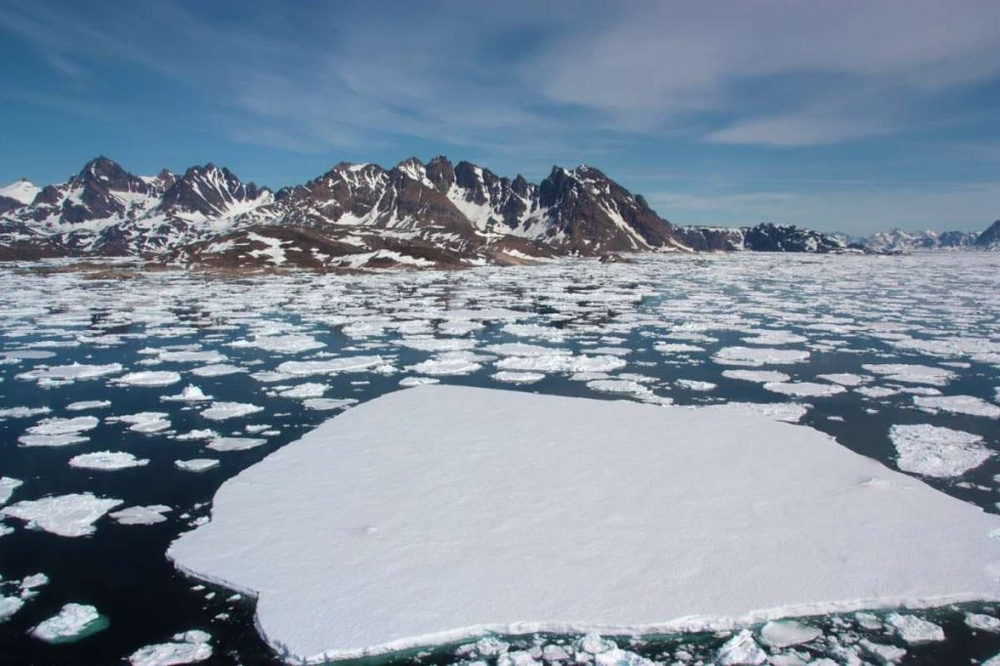

អាណាចក្រ អង្គរ
វប្បធម៏ទូទៅ
ខាងក្រោមនេះគឺជា វប្បធម៏ទូទៅ ដែលខ្ញុំស្រង់ចេញពីសៀវភៅចាស់ៗ
តើតំបន់អេក្វាទ័រគឺជាតំបន់អ្វី?

ហេតុអ្វីបានជាប្រជាជនអាមេរិកចំនួនមានភាពក្រីក្រ?
តើពពកមានទម្ងន់ប៉ុន្មាន?
តើតំបន់អេក្វាទ័រគឺជាតំបន់អ្វី?
តើតំបន់អេក្វាទ័រគឺជាតំបន់អ្វី?
តើតំបន់អេក្វាទ័រគឺជាតំបន់អ្វី?
តើតំបន់អេក្វាទ័រគឺជាតំបន់អ្វី?
តើតំបន់ប៉ូលណាមានភាពត្រជាក់ជាងគេ?
